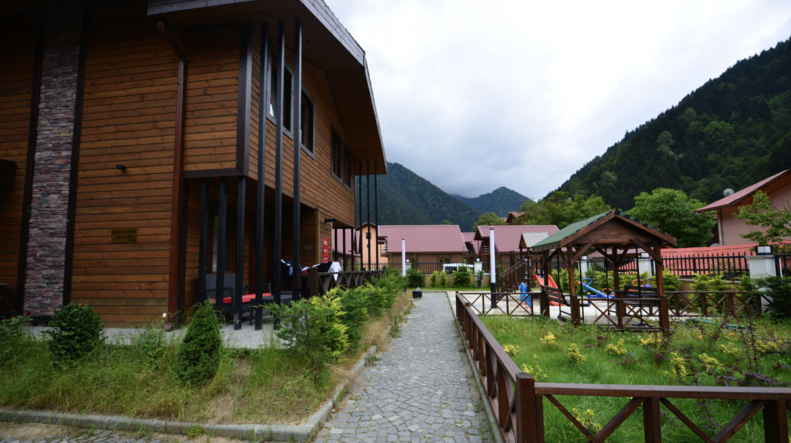
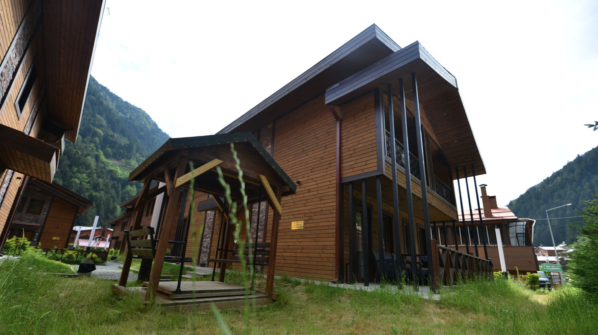

Bizim hikâyemiz
Bir aile sıcaklığı.
Bir Uzungöl hatırası.
İnan ailesinin misafirperverliğini, evinizin rahatlığıyla buluşturan bir yer.
İnanlar Premium
Misafirperverlik,
bizim için aileden gelir.
Uzungöl İnanlar Premium Suit ve Villa, İnan ailesinin girişimiyle siz değerli misafirlerimizin hizmetine sunulmuştur. İnanlar Premium, misafirlerimizin kendilerini evlerinde hissedeceği atmosferi lüks hizmetle birleştirerek villa ve suit seçenekleriyle sunar.
Göle mesafesi 200 metre olan tesisimiz, Uzungöl’ün merkezinde, alışveriş ve eğlence mekânlarının hemen yakınındadır. Diğer tesislerimiz ve restoranlarımız 50 metre mesafededir. Uzungöl’ün lezzetlerini deneyimlemek için İnan Kardeşler Restoranları’nı ziyaret edebilirsiniz.
İletişimUzungöl kıyısına
Diğer tesislerimize ve restoranlarımıza


İnanlar Premium · Uzungöl
Uzungöl’de buluşalım.
Konaklamanızla ilgili sorularınız ve rezervasyon için bizimle iletişime geçin.